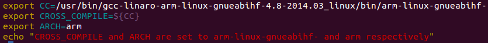

Below are the steps I used to install the cross compiler.
- Download the cross compiler:
>> wget -c https://releases.linaro.org/14.04/components/toolchain/binaries/gcc-linaro-arm-linux-gnueabihf-4.8-2014.04_linux.tar.xz
- Unzip it:
>> tar xf gcc-linaro-arm-linux-gnueabihf-4.8-2014.04_linux.tar.xz
- export the CC env variable, it will be used in all compilations:
>> export CC=`pwd`/gcc-linaro-arm-linux-gnueabihf-4.8-2014.04_linux/bin/arm-linux-gnueabihf-
- To test it:
>> ${CC}gcc --version
This will print the version of the cross compiler.
- As an useful additional thing, you can set and export the CC and CROSS_COMPILE environment variables in .bashrc. So whenever you start bash the variables are automatically set. You can echo an warning that reads: "CC and CROSS_COMPILE are set to so and so...." which is echoed when bash starts up. This will remind the user of the custom environment variables. Below are images of my bashrc inclusions and the echoed warning when bash is started:

- As you may see from the above image, I have placed the cross compilers in the /usr/bin directory. Its basically your personnel choice (Try not to copy it to an alien mother-ship server! they know it then its your funeral! :P)
List of commands
- wget -c https://releases.linaro.org/14.04/components/toolchain/binaries/gcc-linaro-arm-linux-gnueabihf-4.8-2014.04_linux.tar.xz
- tar xf gcc-linaro-arm-linux-gnueabihf-4.8-2014.04_linux.tar.xz
- export CC=`pwd`/gcc-linaro-arm-linux-gnueabihf-4.8-2014.04_linux/bin/arm-linux-gnueabihf-
- ${CC}gcc --version
Previous Page
Home